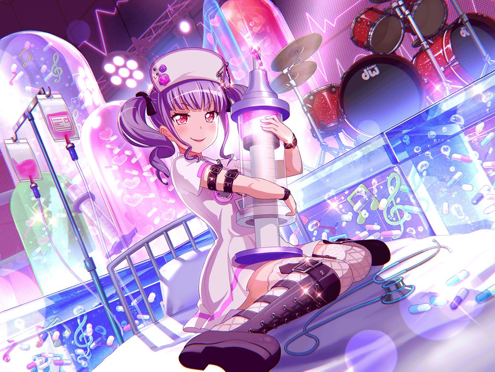

CiRCLE カフェスペース
あこ
う～ん！
この紅茶おいしい～！
あこ
たーっぷりミルク入れちゃおーっと！
あこ
……あ、{{userName}}さんっ！
あこ
いきなり声を掛けられたから
ビックリしちゃったよ～
あこ
{{userName}}さん、お仕事は？
あこ
あ、休憩しにきたんだ？
その気持ち、わかるわかる！
あこ
だって、今日はこんなにいいお天気だもん！
休憩するなら、お外に出た方が絶対気持ちいいよね！
あこ
……そうだ！ {{userName}}さん、
もしよかったら、あこのお話聞いてもらってもいい？
あこ
わーい、ありがとう！
あこ
あのねあのね、実はこの間ね、
おねーちゃんが風邪を引いちゃって
大変だったんだ……
あこ
あ、でも、安心して？
今はもう元気になってるから！
あこ
あの日はね、あこ、
学校帰りにショッピングモールに
寄ってたんだ
あこ
そうしたらおねーちゃんから、
風邪を引いたっていうメールをもらって……
あこ
あこ、本当に驚いて、
急いで家に帰ったの
あこ
それで、おねーちゃんの部屋に行ったら、
おねーちゃんがベッドでぐったりしてて……
あこ
よくドラマとかで、血の気が引くって言うけど、
あの時、生まれて初めて血の気が引くっていう
感覚がわかったよ
あこ
あこ、あんなにぐったりしてるおねーちゃんを
見たことがなかったから、
すっごく不安な気持ちになっちゃった
あこ
でもね、あこ、すぐに『不安なままじゃダメ！』って
思い直したんだ
あこ
だって、その日はおかーさんがいなかったから、
おねーちゃんを看病できるのあこだけなんだもん！
あこ
だから、あこがなんとかしなきゃって思ったの！
あこ
そこからはね、すごく必死だったから、
あまりよく覚えてないんだけど……
あこ
たしか、おねーちゃん、制服のままで眠ってたから
パジャマに着替えさせてあげたんだと思う
あこ
そのあと、少しおねーちゃんが心細そうだったから
おねーちゃんが眠るまでそばにいたの
あこ
それから、おねーちゃんを起こさないように
そーっと部屋を出て、
他にできることがないか考えてたら……
あこ
さあやちゃんとつぐちんとはぐみが、
差し入れを持って来てくれたんだ！
あこ
うん！
みんな、おねーちゃんのことを
心配して来てくれたんだよ！
あこ
えへへ、
さあやちゃんもつぐちんもはぐみも、
ホントに優しいよね！
あこ
あこ、なんだか、
すっごくうれしい気持ちになっちゃった！
あこ
それでね、３人が帰ったあと、
もらった差し入れで、
あこ、料理したんだよ！
あこ
何つくったのか気になる？
あこ
えへへ～♪
じゃあ、教えてあげるね！
あこ
あこがつくった料理は、
鶏団子スープだよ！
あこ
鶏団子スープをつくった時にね、
おかーさんに味見してもらったんだけど、
すごくおいしいって褒められたんだ～♪
あこ
もちろん、おねーちゃんにも
おいしいって言ってもらえたよ！
あこ
そういえば、その時にね……
ん？ その時だったかな？？
あこ
えっと……とにかくね、
看病してる時に、おねーちゃんに
『成長したな』って言ってもらったの
あこ
あこ、その言葉を聞いても、
あまりピンッとこなかったんだけど……
あこ
{{userName}}さん、
あこって……成長したのかな？
あこ
おねーちゃんがそう言ってくれたってことは、
おねーちゃんの役に立てたってことだから、
うれしいんだけど……
あこ
あこ、自分じゃ、よくわからないんだ～
あこ
……成長してる？ ホント？
やった～！！
あこ
よ～し、だったら、
あこ、これからももっと成長する！
あこ
おねーちゃんを今よりも驚かせるくらい！
それで、いっぱい頼ってもらえるようになるんだ！
あこ
{{userName}}さん！
あこが成長できるように応援しててね！